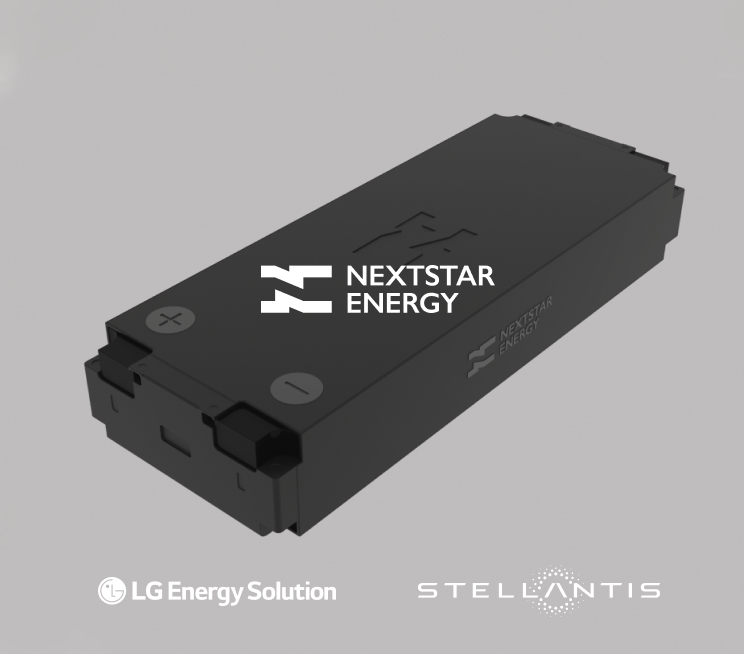
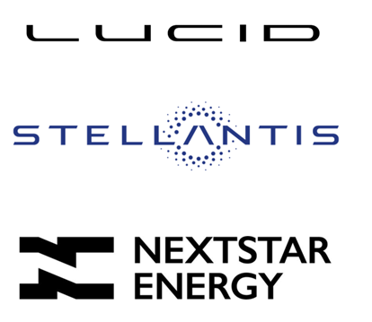

Battery Algorithms Engineer
Building robust SoX estimation and diagnostic features in MATLAB/Simulink, with emphasis on scalable model validation and architecture adaptability.
- Developing software behavior updates for new cell types and pack variants.
- Supporting AUTOSAR integration and model-based development workflows.
- Testing algorithm behavior with CANape/CANalyzer on in-house HiL setups.
Battery State Estimation Engineer Co-op

Managed battery test-data analysis pipelines and developed tools for efficient post-processing, monitoring, and model parameter extraction.
- Automated data preparation and conversion using MATLAB App Designer tooling.
- Validated pack tests against procedure requirements and SOx expectations.
- Improved tracking with macro-enabled workflows for test-status visibility.
Quality Engineering Co-op

Contributed to production-quality systems through root-cause investigations, SOP standardization, and onboarding support in a fast-paced cell environment.
- Applied structured problem solving using 8D and process-audit approaches.
- Updated SOPs to align with audit standards and operational clarity.
- Created onboarding materials that clarified end-to-end manufacturing flow.